The Tree of Philosophy
38 great thinkers on two trees. Tap a face to meet the thinker, then explore one of their big ideas.
1 Tap a face2 Meet the thinker3 Explore their idea
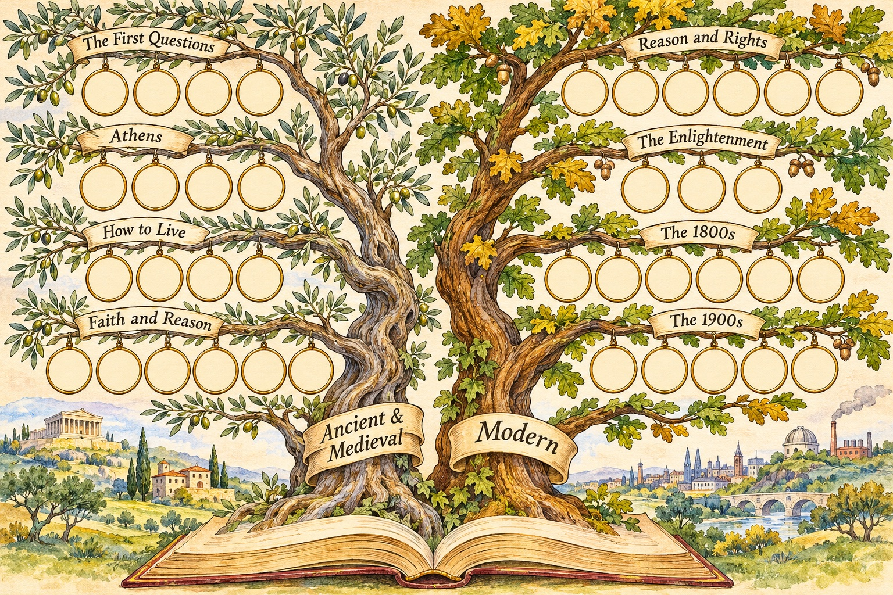
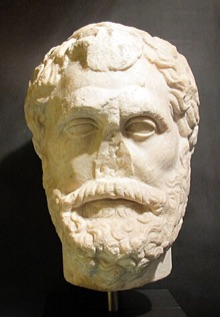
Thales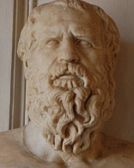
Heraclitus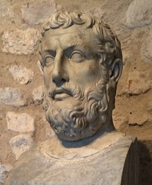
Parmenides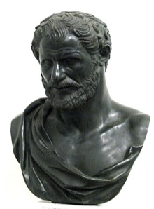
Democritus Socrates
Socrates Plato
Plato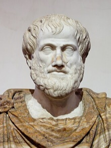
Aristotle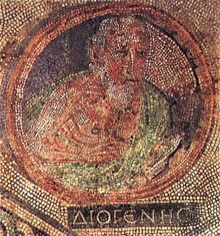
Diogenes Epicurus
Epicurus Zeno
Zeno Marcus Aurelius
Marcus Aurelius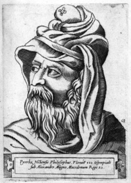
Pyrrho Augustine
Augustine BoethiusAvicenna
BoethiusAvicenna Averroes
Averroes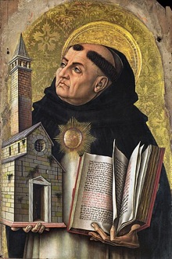
Aquinas Ockham
Ockham Machiavelli
Machiavelli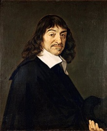
Descartes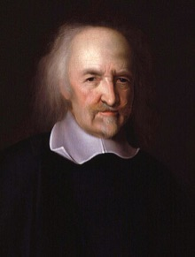
Hobbes Spinoza
Spinoza Locke
Locke Leibniz
Leibniz Hume
Hume Rousseau
Rousseau Kant
Kant Hegel
Hegel Schopenhauer
Schopenhauer Marx
Marx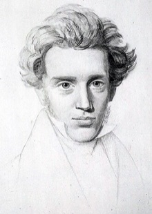
Kierkegaard Nietzsche
Nietzsche William James
William James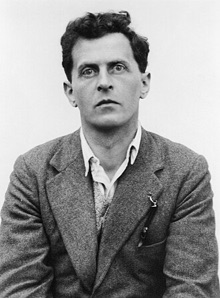
WittgensteinSartre Camus
Camus Arendt
Arendt Simone Weil
Simone WeilAll the thinkers
The same map as a list.
Ancient & Medieval
The First Questions · 600-370 BC
Athens · 470-320 BC
How to Live · 340 BC-180 AD
Faith and Reason · 350-1350
Modern
Reason and Rights · 1500-1716
The Enlightenment · 1711-1804
The 1800s · 1770-1910
The 1900s · 1889-1980
Beyond the two trees
Big ideas from outside the Western tradition.
The Buddha: The Second Arrow
Why small things hurt so much, and how to let go.